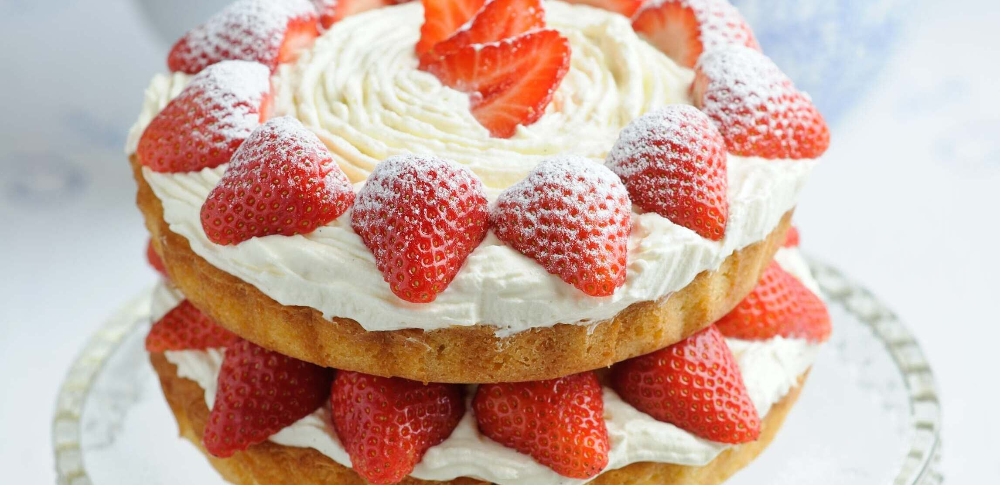
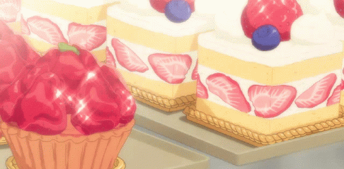

S T R A W B E R R Y
S P O N G E C A K E
Delicious and Nutritious
Home

i n g r e d i e n t s
- 125g of Plain
or All Purpose Flour
- 100g of White Sugar
- Yolks of 4 Fresh
Large Eggs
- Whites of 4 Fresh
Large Eggs
- 60g of Melted Butter
- 18 Strawberries
- 400ml of Double
Cream
- 40ml of Water
m e t h o d
- Preheat your oven to 180C/ 356F/ Gas 4.
- Coat the inside of a cake tin with butter and dust
with flour, shaking off excess.
- Put the egg yolks in a bowl and add 2/3 of the 100g
sugar and beat them both until white and thick.
- In a separate bowl, beat the egg whites, until you see
the volume double.
- When small bubbles begin to arise, add the remaining
sugar bit by bit.
- The meringue will be ready when it is firm and can form
peaks.
- Put the flour through a sifter, and add to the
beaten
egg yolk.
- Fold the flour in with a spatula, and begin to add the
meringue to this bit by bit.
- Continue folding with the spatula until combined.
- Now, pour the melted butter into the batter and fold
several times.
- Pour the batter into a cake tin and drop the tin on a work
bench to settle it.
- Bake in the oven for 25 minutes and once fully cooked,
allow to cool.
- Whip the double cream until soft peaks form, and begin
preparing the strawberries.
- Alternate the cream, strawberries, and cake until there
are two levels to the cake.
- Set in the fridge for 2 hours.
- Enjoy!
Here is the recipe that inspired this:

Home